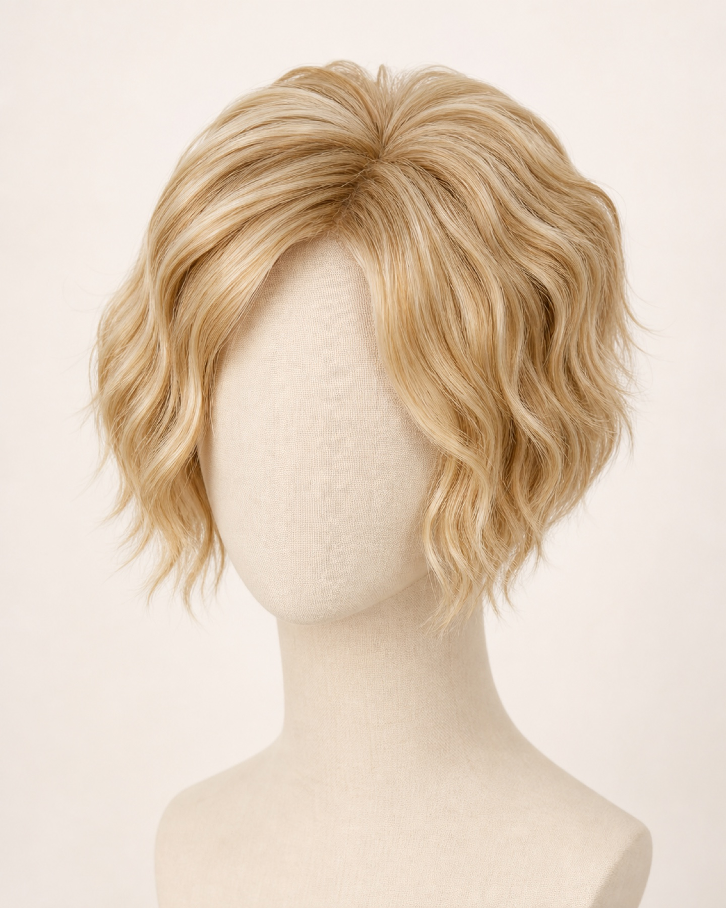
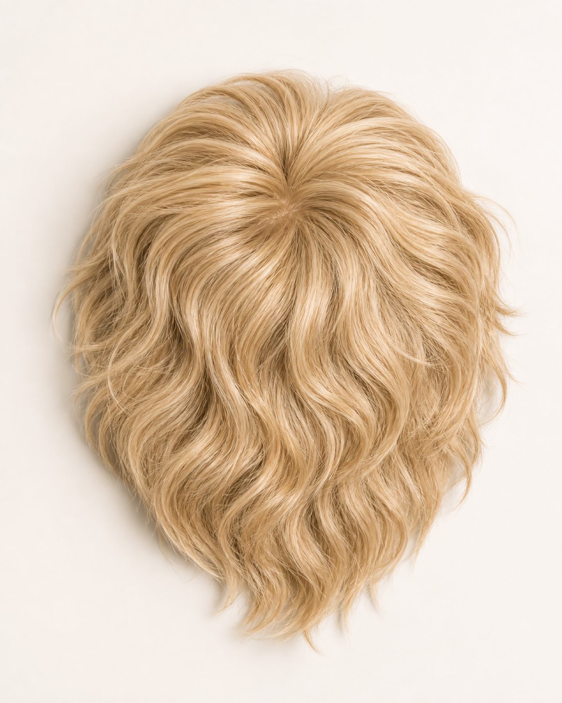
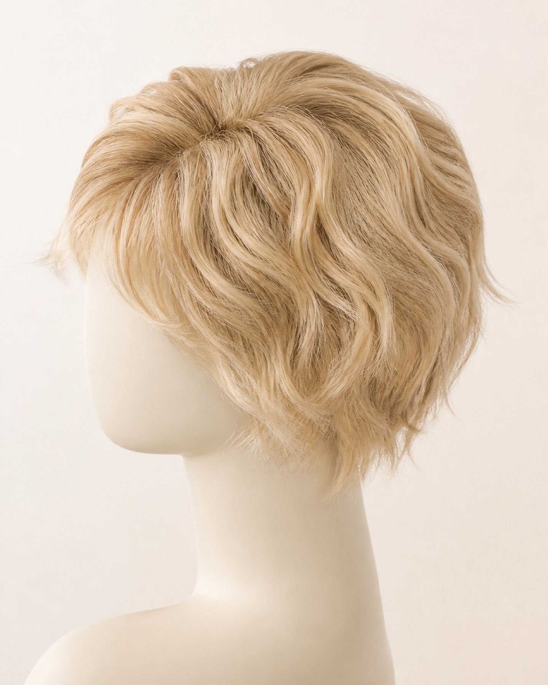

Coverage and blend
Check the intended top-area coverage, edge visibility, density transition and blend into the wearer's short or layered haircut.



DS HAIR · Synthetic Wigs & Hairpieces
PRODUCT CODE · DS-TOP-SY-CI-002
A short layered beach-wave clip-in crown-topper direction for professional buyers developing top-area coverage and soft-volume ranges. The cited reference documents a heat-friendly synthetic direction, four length points and a 1.9 oz reference weight; DS HAIR production construction, fibre and colour match require sample approval.
Commercial terms and unconfirmed technical details are provided only after specification review.
BUILD YOUR BUYING BRIEF
These controls prepare an enquiry; they do not indicate live stock. Final feasibility, MOQ, price and lead time are confirmed in writing.
PRIMARY COLOUR SYSTEM
Screen colour is for initial selection only. Final shade approval should use a physical colour ring or confirmed sample. Where the source chart has no published shade code, Ref numbers are temporary website identifiers only.
REQUEST A PHYSICAL COLOUR KIT →BUYER ANSWER
A short layered beach-wave clip-in crown-topper direction for professional buyers developing top-area coverage and soft-volume ranges. The cited reference documents a heat-friendly synthetic direction, four length points and a 1.9 oz reference weight; DS HAIR production construction, fibre and colour match require sample approval.
EVALUATION POINTS
Use a representative sample to turn visual impressions into an approved, repeatable product reference.
Check the intended top-area coverage, edge visibility, density transition and blend into the wearer's short or layered haircut.
Approve the actual DS HAIR synthetic-topper underside, base and clip layout from a physical sample or buyer-approved construction before publishing those claims.
Approve wave definition, shine, hand, tangling, style recovery and a documented heat-care protocol for the selected production fibre.
Retain the approved sample and written tolerances with the confirmed US$2.55–2.95 price range, 30 pcs/color MOQ and 3–21 day lead time.
SIMILAR PRODUCT COMPARISON
These formats solve different wearer needs. Approve the topper as a complete coverage system rather than selecting it from wave appearance alone.
Scroll horizontally to compare methods →
| Buyer question | Clip-In Crown Topper | One-Piece Clip-In | Ponytail | Full Synthetic Wig |
|---|---|---|---|---|
| Primary purpose | Top coverage and crown volume | Back length and volume | Gathered-base length | Full-head coverage |
| Attachment | Clip-in; DS HAIR construction to confirm | Wide weft with multiple clips | Wrap, claw clip or elastic | Full cap |
| Key buyer check | Coverage, wave blend and comfort | Weight distribution and width | Base security and fall | Cap fit and hairline |
| Sample focus | Coverage, wave pattern, fibre and comfort | Blend, clip map and movement | Attachment and movement | Cap, hairline and overall fit |
These formats solve different wearer needs. Approve the topper as a complete coverage system rather than selecting it from wave appearance alone.
THE DS HAIR DIFFERENCE
We compare the way a project is managed—not make unverified statements about another supplier’s hair.
SPECIFICATION STATUS
DS HAIR does not publish assumptions as product specifications. Open items are confirmed against the selected supply batch and quotation.
OEM / PRIVATE LABEL
PROFESSIONAL PRODUCT KNOWLEDGE
Practical guidance for salons, distributors and private-label teams. Product-specific claims still require sample approval.
It is a partial synthetic hairpiece designed to add top-area coverage or crown volume with a short, softly waved finish while leaving the wearer's perimeter hair visible.
The cited page states front 4 inches, crown 8.75 inches, sides 7.5 inches, back 8.5 inches and a 1.9 oz reference weight.
Approve the real DS HAIR synthetic-topper underside, base and clip layout from a physical sample or buyer-approved construction. Do not infer them from the clip-in topper name.
The unit-price range is US$2.55–2.95, MOQ is 30 pcs/color and lead time is 3–21 days. Final order totals follow the approved written specification.
Retain the approved sample plus written tolerances for fibre, construction, wave pattern, density, length map, colour, care language and packaging.
BUYER QUESTIONS
Yes. DS-TOP-SY-CI-002 is presented as a B2B development reference with a 30 pcs/color MOQ, US$2.55–2.95 unit-price range and 3–21 day lead time. Final order details follow the approved written specification.
The cited page states front 4 inches, crown 8.75 inches, sides 7.5 inches, back 8.5 inches and a 1.9 oz reference weight. DS HAIR production measurement points and tolerances require sample approval.
No DS HAIR underside, base, clip count or clip layout is claimed. Approve those details from a physical DS HAIR sample or buyer-approved construction before publication.
The source describes a heat-friendly synthetic direction. The selected DS HAIR production fibre and sample must pass a documented heat test before a maximum temperature or care claim is issued.
Colour matching and private-label presentation can be reviewed against physical references, artwork and quantity requirements. Available options and packing details require written confirmation.
REFERENCE · DS-TOP-SY-CI-002
Send the target wearer, coverage zone, approved synthetic-topper construction reference, wave pattern, colour reference, fibre and heat-care requirement, packaging brief and estimated quantity so DS HAIR can prepare the correct sample and quotation path.
SEND YOUR BUYING BRIEF